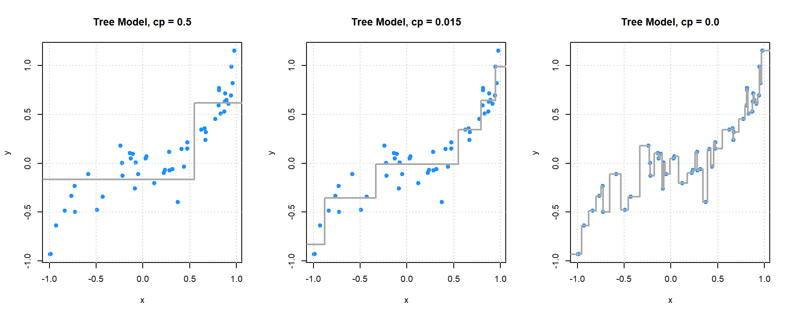
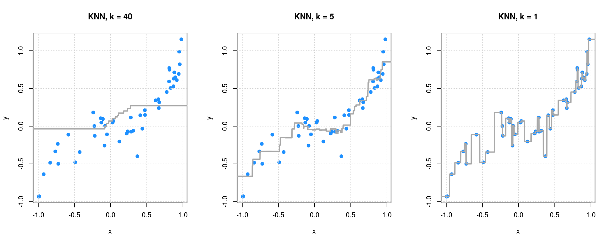
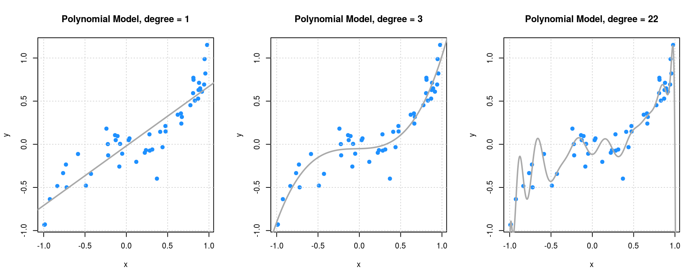

Chapter 5 Overview
Chapter Status: This chapter is currently undergoing massive rewrites. Some code is mostly for the use of current students. Plotting code is often not best practice for plotting, but is instead useful for understanding.
- Supervised Learning
- Regression (Numeric Response)
- What do we want? To make predictions on unseen data. (Predicting on data we already have is easy…) In other words, we want a model that generalizes well. That is, generalizes to unseen data.
- How we will do this? By controlling the complexity of the model to guard against overfitting and underfitting.
- Model Parameters
- Tuning Parameters
- Why does manipulating the model complexity accomplish this? Because there is a bias-variance tradeoff.
- How do we know if our model generalizes? By evaluating metrics on test data. We will only ever fit (train) models on training data. All analyses will begin with a test-train split. For regression tasks, our metric will be RMSE.
- Classification (Categorical Response) The next section.
- Regression (Numeric Response)

Regression is a form of supervised learning. Supervised learning deals with problems where there are both an input and an output. Regression problems are the subset of supervised learning problems with a numeric output.
Often one of the biggest differences between statistical learning, machine learning, artificial intelligence are the names used to describe variables and methods.
- The input can be called: input vector, feature vector, or predictors. The elements of these would be an input, feature, or predictor. The individual features can be either numeric or categorical.
- The output may be called: output, response, outcome, or target. The response must be numeric.
As an aside, some textbooks and statisticians use the terms independent and dependent variables to describe the response and the predictors. However, this practice can be confusing as those terms have specific meanings in probability theory.
Our goal is to find a rule, algorithm, or function which takes as input a feature vector, and outputs a response which is as close to the true value as possible. We often write the true, unknown relationship between the input and output \(f(\bf{x})\). The relationship (model) we learn (fit, train), based on data, is written \(\hat{f}(\bf{x})\).
From a statistical learning point-of-view, we write,
\[ Y = f(\bf{x}) + \epsilon \]
to indicate that the true response is a function of both the unknown relationship, as well as some unlearnable noise.
\[ \text{RMSE}(\hat{f}, \text{Data}) = \sqrt{\frac{1}{n}\displaystyle\sum_{i = 1}^{n}\left(y_i - \hat{f}(\bf{x}_i)\right)^2} \]
\[ \text{RMSE}_{\text{Train}} = \text{RMSE}(\hat{f}, \text{Train Data}) = \sqrt{\frac{1}{n_{\text{Tr}}}\displaystyle\sum_{i \in \text{Train}}^{}\left(y_i - \hat{f}(\bf{x}_i)\right)^2} \]
\[ \text{RMSE}_{\text{Test}} = \text{RMSE}(\hat{f}, \text{Test Data}) = \sqrt{\frac{1}{n_{\text{Te}}}\displaystyle\sum_{i \in \text{Test}}^{}\left(y_i - \hat{f}(\bf{x}_i)\right)^2} \] - TODO: RSS vs \(R^2\) vs RMSE
Code for Plotting from Class
## load packages
library(rpart)
library(FNN)# simulate data
## signal
f = function(x) {
x ^ 3
}
## define data generating processs
get_sim_data = function(f, sample_size = 50) {
x = runif(n = sample_size, min = -1, max = 1)
y = rnorm(n = sample_size, mean = f(x), sd = 0.15)
data.frame(x, y)
}
## simualte training data
set.seed(42)
sim_trn_data = get_sim_data(f = f)
## simulate testing data
set.seed(3)
sim_tst_data = get_sim_data(f = f)
## create grid for plotting
x_grid = data.frame(x = seq(-1.5, 1.5, 0.001))# fit models
## tree models
tree_fit_l = rpart(y ~ x, data = sim_trn_data,
control = rpart.control(cp = 0.500, minsplit = 2))
tree_fit_m = rpart(y ~ x, data = sim_trn_data,
control = rpart.control(cp = 0.015, minsplit = 2))
tree_fit_h = rpart(y ~ x, data = sim_trn_data,
control = rpart.control(cp = 0.000, minsplit = 2))
## knn models
knn_fit_l = knn.reg(train = sim_trn_data["x"], y = sim_trn_data$y,
test = x_grid, k = 40)
knn_fit_m = knn.reg(train = sim_trn_data["x"], y = sim_trn_data$y,
test = x_grid, k = 5)
knn_fit_h = knn.reg(train = sim_trn_data["x"], y = sim_trn_data$y,
test = x_grid, k = 1)
## polynomial models
poly_fit_l = lm(y ~ poly(x, 1), data = sim_trn_data)
poly_fit_m = lm(y ~ poly(x, 3), data = sim_trn_data)
poly_fit_h = lm(y ~ poly(x, 22), data = sim_trn_data)# get predictions
## tree models
tree_fit_l_pred = predict(tree_fit_l, newdata = x_grid)
tree_fit_m_pred = predict(tree_fit_m, newdata = x_grid)
tree_fit_h_pred = predict(tree_fit_h, newdata = x_grid)
## knn models
knn_fit_l_pred = knn_fit_l$pred
knn_fit_m_pred = knn_fit_m$pred
knn_fit_h_pred = knn_fit_h$pred
## polynomial models
poly_fit_l_pred = predict(poly_fit_l, newdata = x_grid)
poly_fit_m_pred = predict(poly_fit_m, newdata = x_grid)
poly_fit_h_pred = predict(poly_fit_h, newdata = x_grid)# plot fitted trees
par(mfrow = c(1, 3))
plot(y ~ x, data = sim_trn_data, col = "dodgerblue", pch = 20,
main = "Tree Model, cp = 0.5", cex = 1.5)
grid()
lines(x_grid$x, tree_fit_l_pred, col = "darkgrey", lwd = 2)
plot(y ~ x, data = sim_trn_data, col = "dodgerblue", pch = 20,
main = "Tree Model, cp = 0.015", cex = 1.5)
grid()
lines(x_grid$x, tree_fit_m_pred, col = "darkgrey", lwd = 2)
plot(y ~ x, data = sim_trn_data, col = "dodgerblue", pch = 20,
main = "Tree Model, cp = 0.0", cex = 1.5)
grid()
lines(x_grid$x, tree_fit_h_pred, col = "darkgrey", lwd = 2)
# plot fitted KNN
par(mfrow = c(1, 3))
plot(y ~ x, data = sim_trn_data, col = "dodgerblue", pch = 20,
main = "KNN, k = 40", cex = 1.5)
grid()
lines(x_grid$x, knn_fit_l_pred, col = "darkgrey", lwd = 2)
plot(y ~ x, data = sim_trn_data, col = "dodgerblue", pch = 20,
main = "KNN, k = 5", cex = 1.5)
grid()
lines(x_grid$x, knn_fit_m_pred, col = "darkgrey", lwd = 2)
plot(y ~ x, data = sim_trn_data, col = "dodgerblue", pch = 20,
main = "KNN, k = 1", cex = 1.5)
grid()
lines(x_grid$x, knn_fit_h_pred, col = "darkgrey", lwd = 2)
# plot fitted polynomials
par(mfrow = c(1, 3))
plot(y ~ x, data = sim_trn_data, col = "dodgerblue", pch = 20,
main = "Polynomial Model, degree = 1", cex = 1.5)
grid()
lines(x_grid$x, poly_fit_l_pred, col = "darkgrey", lwd = 2)
plot(y ~ x, data = sim_trn_data, col = "dodgerblue", pch = 20,
main = "Polynomial Model, degree = 3", cex = 1.5)
grid()
lines(x_grid$x, poly_fit_m_pred, col = "darkgrey", lwd = 2)
plot(y ~ x, data = sim_trn_data, col = "dodgerblue", pch = 20,
main = "Polynomial Model, degree = 22", cex = 1.5)
grid()
lines(x_grid$x, poly_fit_h_pred, col = "darkgrey", lwd = 2)
Hastie, Trevor, Robert Tibshirani, and Jerome Friedman. 2001. The Elements of Statistical Learning. Vol. 1. Springer series in statistics New York.
James, Gareth, Daniela Witten, Trevor Hastie, and Robert Tibshirani. 2013. An Introduction to Statistical Learning. Vol. 112. Springer.